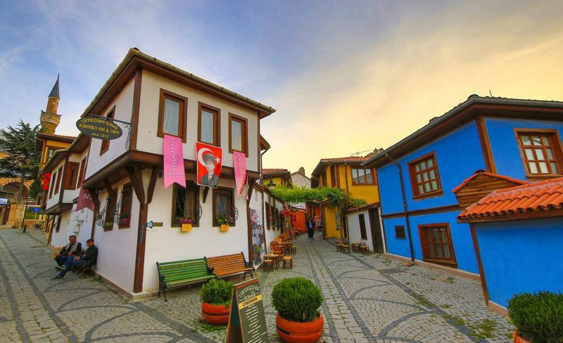
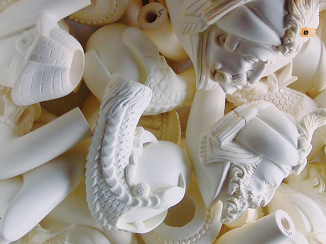
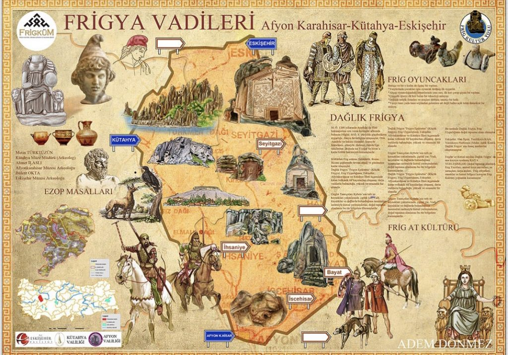

ODUNPAZARI EVLERİ
Odunpazarı Eskişehir’in güneyindeki tepelerde kurulmuştur. Semt geleneksel Anadolu Türk mimarisinin en güzel örneğidir.
Kıvrımlı yolları, çıkmaz sokakları, ahşap süslemelere sahip, bitişik düzenli cumbalı evleriyle geçmiş ile ilgili günümüze ışık tutmaktadır.
Birleşmiş Milletler Eğitim, Bilim ve Kültür Örgütü (UNESCO) tarafından 2012'de Dünya Mirası olarak kabul edilmiştir.

Tarihi evlerin yanı sıra döneme özgü Kurşunlu Camii ve Külliyesi de bu bölgede bulunuyor. Ayrıca bölgenin geleneksel el sanatlarının
örneklerinin görülebileceği tarihi Atlıhan, Eskişehir Sanatları Çarşıları ve Lületaşı Müzesi de ziyaretçilerin ilgisini çeken diğer
mekanlar arasında yer alıyor. Odunpazarı’nda Evliya Çelebi'nin Seyahatnamesinde ismi geçen sokaklardan 5 tanesi hala aynı isim ile anılmaktadır.
Daracık sokakları ve sokakların iki tarafına sıralanmış evler ile tablo misali duran Odunpazarı, Osmanlı zamanının kent mimarisini yansıtmaktadır.
Eskişehiri gezmek isteyenler bir kaç günü ayırmalı.
LÜLE TAŞI
Eskişehir denilince ilk akla gelen simgelerden birisi 5000 yıldır bilinen ve kullanılan Lületaşı'dır. Dünya rezervlerinin büyük bölümü Eskişehir sınırları
içinde bulunan lületaşından birçok hediyelik eşya yapılıyor. Lületaşı Eskişehir’de hem önemli bir iş kolu hem de sanat dalıdır.
Süsleme, aksesuar amaçlı üretim yapılmaktadır. İşleme atölyeleri sürekli yeni modeller geliştirerek farklı kullanım ve tercih alanları yaratmaktadır.
Şehrin büyük bölümünde bulabileceğiniz lületaşından yapılmış pipolar, takılar, biblolar ve diğer
aksesuarlar kendinize ve sevdiklerinize alabileceğiniz en güzel hediyelik eşyadır. Bu yüzden Eskişehir’de en sık hediye olarak sunulan şey lületaşı ürünlerdir.

Kururken nem ve gazın içindeki artıkları bünyesinde tutma özelliği olan lüle taşı iyi bir pipo malzemesidir. Lületaşından yapılmış örnekleri Odunpazarı’ndaki Kurşunlu
Külliyesi içindeki Lületaşı Müzesinde sergilenmektedir. Eskişehir’in birçok yerinde bulabileceğiniz lületaşı aksesuarları özellikle Odunpazarı’nda bulunan Atlı Han Çarşısı ,
Kurşunlu Külliyesi içindeki El Sanatları Merkezi , merkezde bulunan Çukur Çarşı ve İki Eylül Caddesi üzerindeki Esnaf Sarayı‘nda bulabilirsiniz.
DAĞLIK FRİGYA
M.Ö. 9. yy’larda Anadolu’da kurulduğu bilinen Frig Uygarlığı, dünyada yalnızca
bu bölgede yaşamış olan ve kendinden sonra gelen medeniyetlere büyük etkilerde bulunmuş bir medeniyettir.Günümüzde Kütahya, Afyon ve Eskişehir il sınırlarına yayılan Dağlık Frigya Bölgesi,
derin vadiler tarafından şekillenen dağlık bir alan olup, kolayca işlenebilen volkanik tüflerden oluşan bir jeolojik yapıya sahiptir. Bu doğal yapı kayanın oyularak inşa edildiği özgün bir mimarinin
ortaya çıkmasına neden olmuş ve bu mimari kendinden sonra gelen birçok medeniyet tarafından uygulanmıştır.

İkinci Kapadokya olarak tanımlanan Dağlık Frigya Vadisi'nde çok önemli kiliseler ve kral mezarları bulunuyor.
2015'te UNESCO tarafından Dünya mirası olarak alınmış bu bölgede Midas antik kenti bulunmaktadır. Kente giriş yaptığınızda karşınıza çıkan eser olan, yüksekliği 17 metre,
genişliği ise 16,50 metre olan Yazılıkaya kentin en önemli yapısıdır